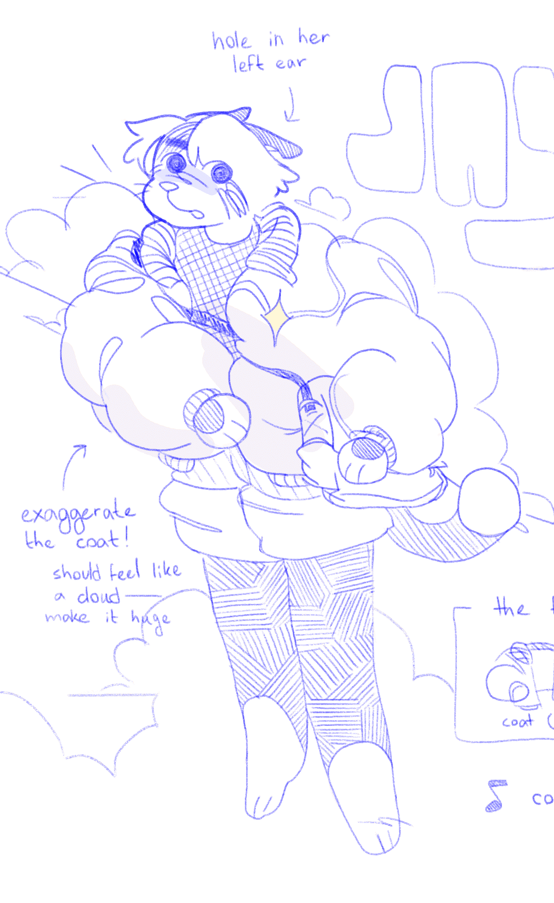

jay wright is a tuxedo cat delivery boy. he's mute, although his friends all know asl.
she's trying to get a foothold in the world after running from home. for now, she's semi-demi-homeless but crashing at c.c.'s while working a delivery job. that means most of his time is spent on the road, which doesn't really help his persistent sense of loneliness.
various bullet points, if you'd like: